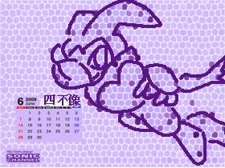

我覺得這張圖有給個很大的提示耶...各位有沒有覺得整個樣子看起來很像聖杯的感覺？
如果是的話那應該８５％就是貝茲了...（再加上最近桌布應該還是ＳＢＫ宣傳期）
只是看起來好像有穿盔甲...？讓我有點不太開心... ＝∼＝
為什麼獨獨某隻紅針鼴就是裸體的啊！？人家也想要看某隻紅針鼴穿盔甲的樣子啊！就算只是拿起面罩ｏｒ鐵鎧衣正面敞開臉頰紅潤的躺在那邊也無妨啊！！（←這位怪伯伯請冷靜...）
嗯咳咳咳！
說是這麼說，不過看這次的超粗馬賽克點陣圖還真的給它難猜到一個境界...
以下產物請慎閱：

附件: ff85959c.jpg
咳，總之是有著NiGHTS的臉＆四肢、露露的胸前愛心還有貝茲尾巴的四不像...llllb
（逃走）